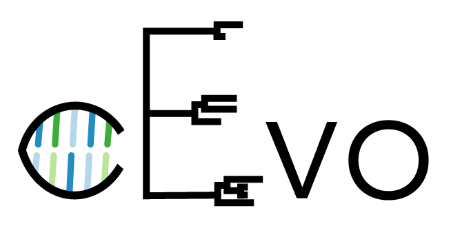

Trees and Beyond!
Adventures in Bayesian Phylodynamics
Stadler Group, D-BSSE, ETH Zürich
D-BSSE Departmental Seminar, 11th Dec, 2018

A phylogenetic tree is a branching diagram or "tree" showing the evoluionary relationships between various species, individuals, or genes.